A snowman in a wizard hat, hugging a small bird on a floating ice block, among glaciers and snow-capped mountains …+ [Orbit 360°]
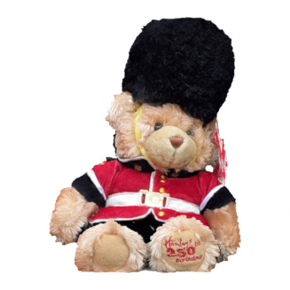
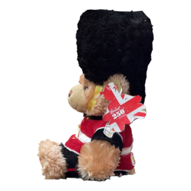
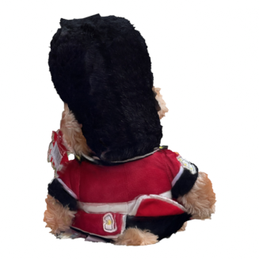
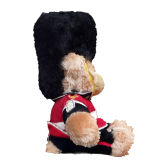
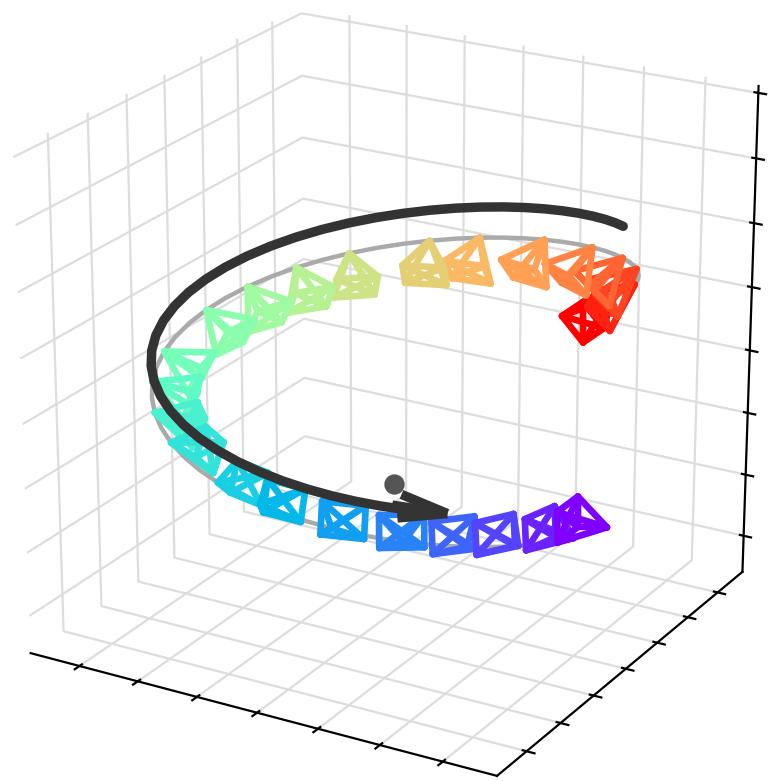
Helix-Down 360°
→
A teddy bear in a red guard uniform on a round marble table in a soft pink dressing room …+ [Helix-Down 360°]
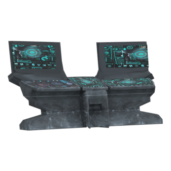
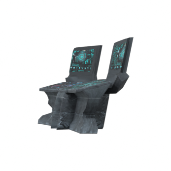
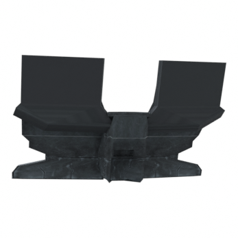
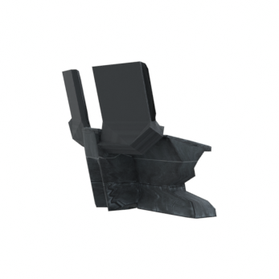
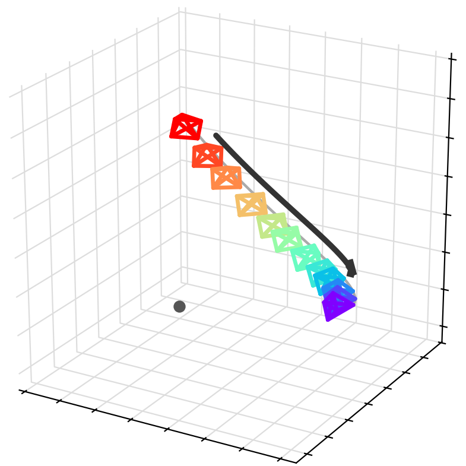
Arc-Down
→
A carved stone sci-fi control console with glowing screens on a bright starship bridge facing a violet nebula …+ [Arc-Down]
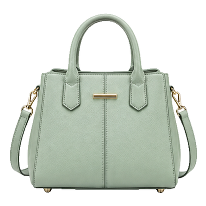
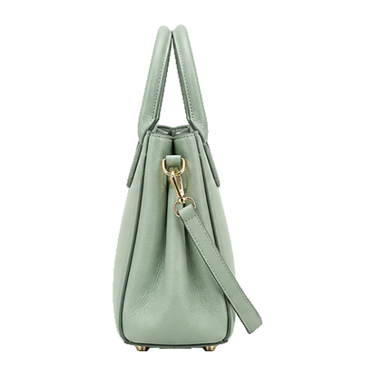
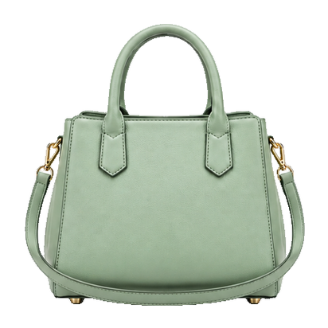
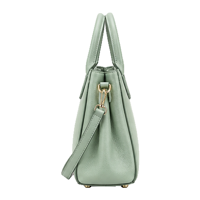
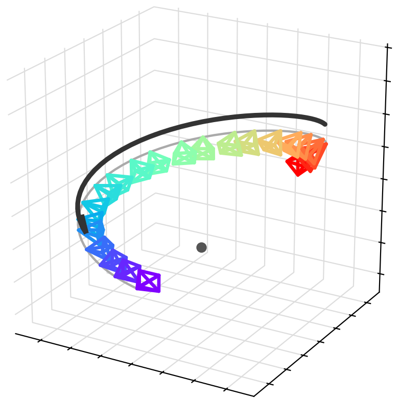
Helix-Down 270°
→
A mint green satchel handbag on a cream velvet stool in an ivory boutique …+ [Helix-Down 270°]
TL;DR: Given a few reference images of an object, OmniShowcase generates a video of that same object along diverse camera paths, even full 360° orbits, keeping its identity and 3D shape consistent by conditioning the video model on a turntable of surface-normal maps reconstructed from the references. We also release Showcase-4K, a training corpus of 3D-asset-based videos covering twelve camera motions across 88 trajectory configurations, and ShowcaseBench, a held-out evaluation set that ships the source meshes and camera parameters behind every video.
Method
Four reference views are reconstructed in 3D and rendered as a surface-normal
turntable. References and normals are concatenated with the target span and read
in context by a LoRA-tuned image-to-video diffusion transformer.
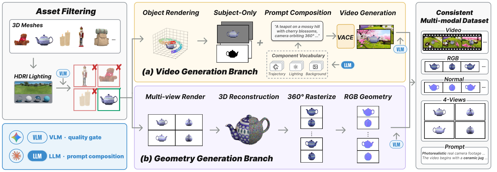
Data synthesis pipeline. Blender renders the target orbit and four
reference views from one curated 3D asset. The target is composited into a
prompt-driven scene, and the four views are reconstructed and rendered as the
normal turntable used as the condition.
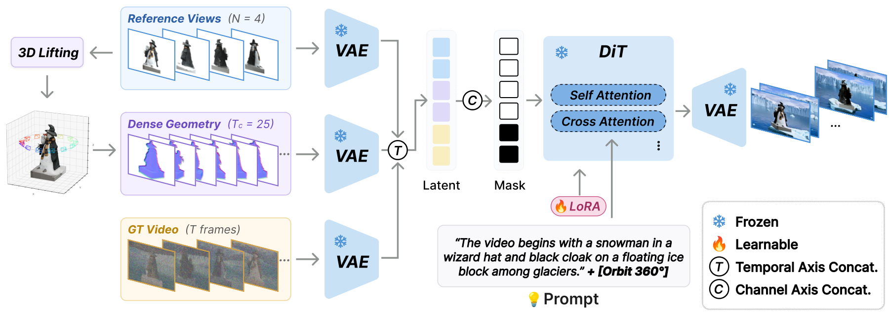
Architecture. The reference images and the normal condition enter the
reference pathway of the diffusion transformer, with no frame-wise alignment
between the normal turntable and the generated video.
Beyond the turntable
The normal condition is a fixed yaw sweep, but the generated camera is not bound
to it. The target follows whichever trajectory the prompt names.
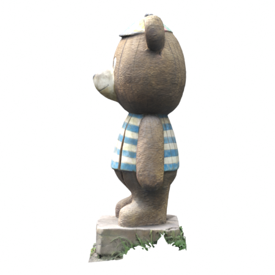
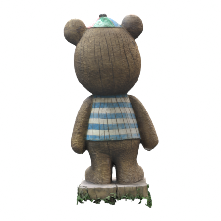
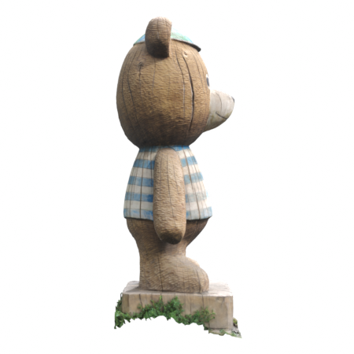
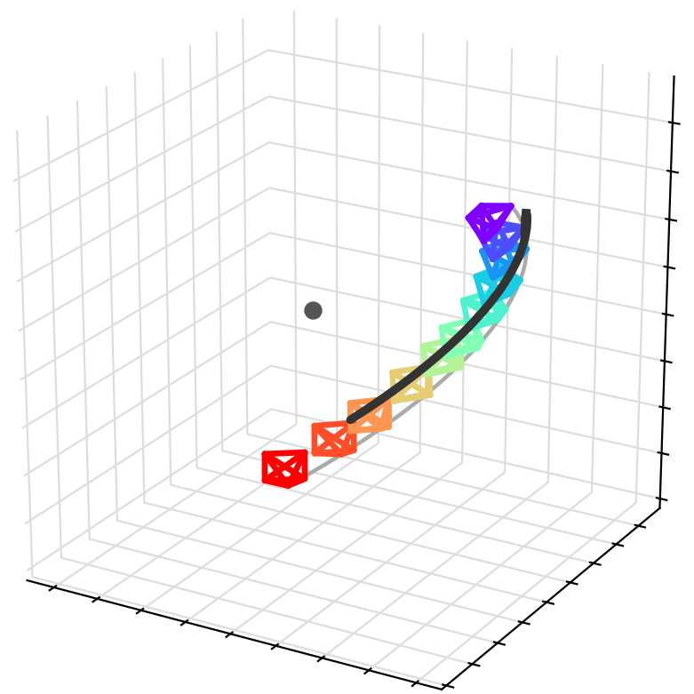
Arc-Up
→
The wooden teddy bear statue on a tile ledge of an Amalfi Coast terrace above a turquoise sea …+ [Arc-Up]
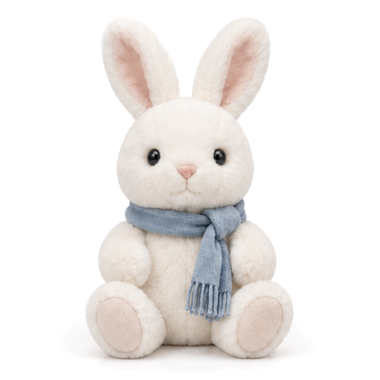
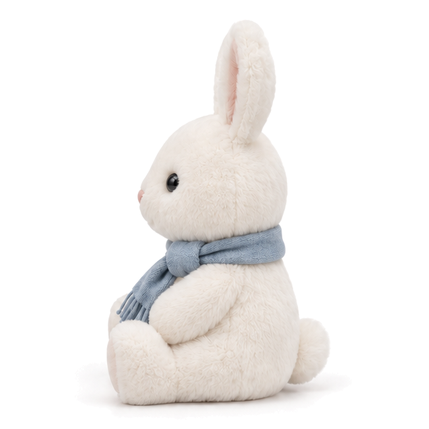
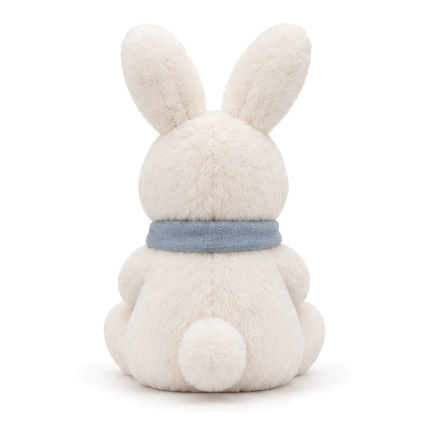
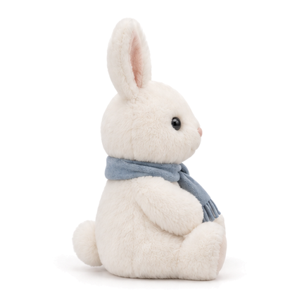
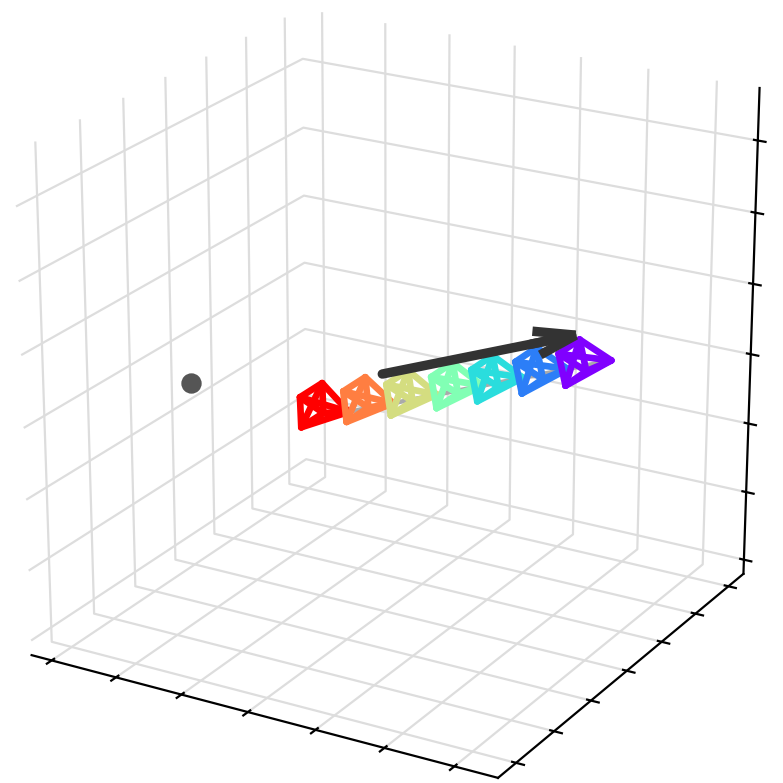
Dolly-Out
→
A fluffy white plush bunny with a blue scarf on a window seat in a plain, bright nursery …+ [Dolly-Out]
Comparison with baselines
Same references, same prompt and same trajectory for every method.
ShowcaseBench
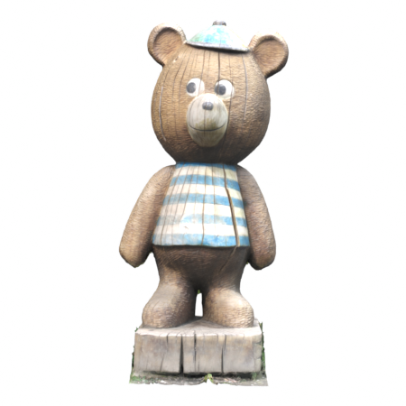
Arc-Down
PhantomMAGREFMV-S2V3DreamBoothOurs
The wooden teddy bear statue on the porch of a snow-covered log cabin at dusk …+ [Arc-Down]
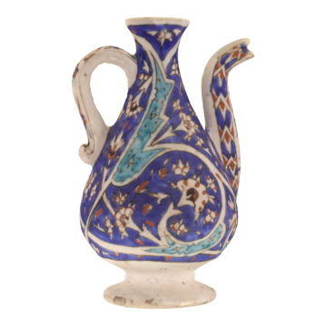
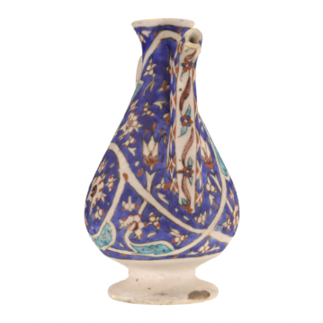
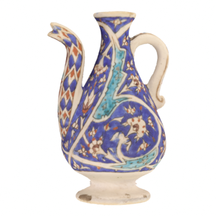
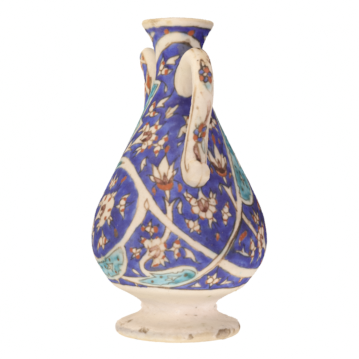
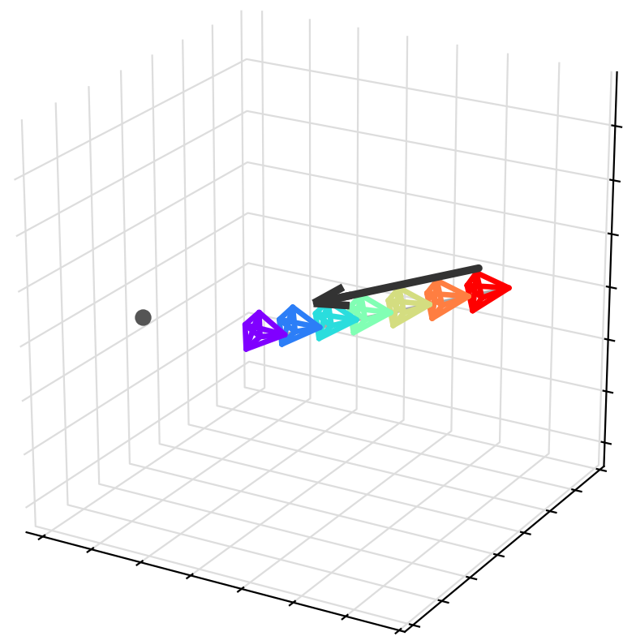
Dolly-In
PhantomMAGREFMV-S2V3DreamBoothOurs
The Iznik ceramic ewer on a marble fountain in a Moroccan riad courtyard …+ [Dolly-In]
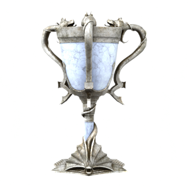
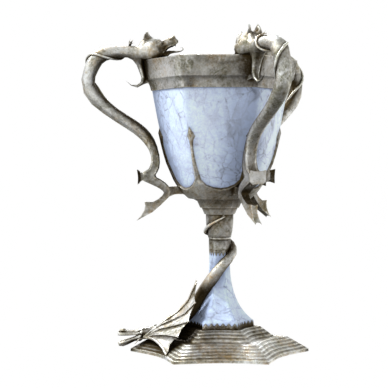
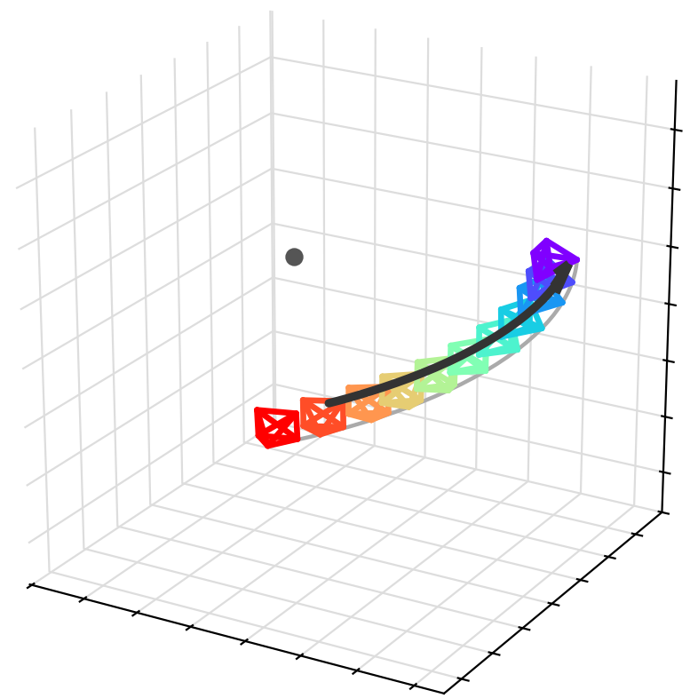
Arc-In
PhantomMAGREFMV-S2V3DreamBoothOurs
The silver dragon trophy cup on an obsidian pedestal in a dark stone hall …+ [Arc-In]
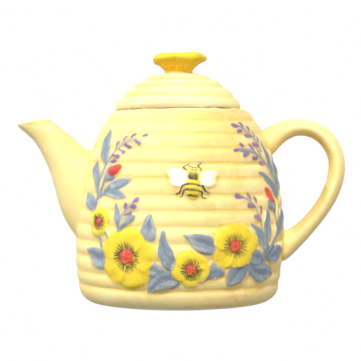
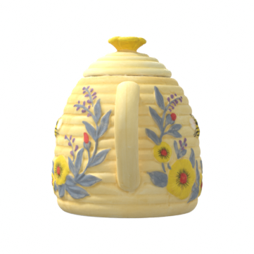
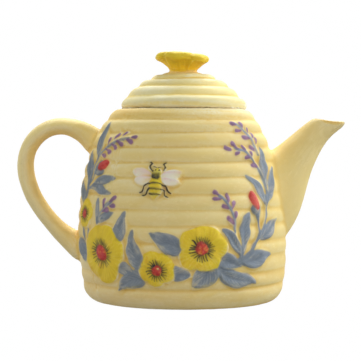
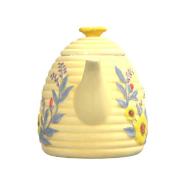
Orbit 360°
PhantomMAGREFMV-S2V3DreamBoothOurs
A beehive-shaped teapot painted with sunflowers on a linen tablecloth, before a limestone wall with climbing vines …+ [Orbit 360°]
NAVI (real-world objects)
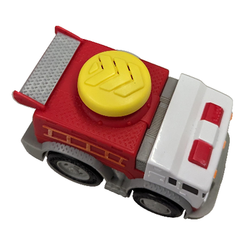
Orbit 360°
PhantomMAGREFMV-S2V3DreamBoothOurs
A red and white toy fire truck on a wooden desk in a children’s playroom …+ [Orbit 360°]
Arc-Down
PhantomMAGREFMV-S2V3DreamBoothOurs
A bald eagle figurine on a carved mantel in a mountain lodge …+ [Arc-Down]
Orbit 360°
PhantomMAGREFMV-S2V3DreamBoothOurs
A wooden toy car shaped like a chicken on the marble floor of a grand hotel lobby …+ [Orbit 360°]
Arc-Up
PhantomMAGREFMV-S2V3DreamBoothOurs
A blue and black cordless drill on a wooden workbench in a home workshop …+ [Arc-Up]
Quantitative results
Bold is best, underline is second best.
Method
Identity
3D consistency
Text
Video quality
DINO↑
CLIP↑
MEt3R↓
GT-CD↓
RotCov↓
ViCLIP↑
Imaging↑
Aesthetic↑
Dynamic↑
Held-out
Phantom-MV
0.621
0.871
0.444
0.2843
0.906
0.236
72.52
0.595
0.460
MAGREF-MV
0.616
0.876
0.409
0.1789
1.177
0.242
73.88
0.614
0.760
MV-S2V
0.688
0.896
0.351
0.2306
0.787
0.244
73.21
0.590
0.960
3DreamBooth
0.707
0.907
0.325
0.1717
0.765
0.238
70.67
0.598
1.000
OmniShowcase
0.799
0.925
0.190
0.0824
0.665
0.259
74.29
0.574
1.000
NAVI
Phantom-MV
0.690
0.882
0.462
0.2014
1.458
0.255
71.17
0.572
0.029
MAGREF-MV
0.665
0.892
0.457
0.2145
1.284
0.251
69.81
0.574
0.343
MV-S2V
0.770
0.912
0.350
0.1816
1.163
0.250
71.73
0.565
1.000
3DreamBooth
0.741
0.912
0.386
0.2272
1.179
0.244
70.34
0.559
1.000
OmniShowcase
0.828
0.918
0.249
0.0975
1.074
0.260
74.58
0.551
1.000
Ablation
Removing the normals, replacing them with a textured render, or thinning the
turntable all degrade identity and 3D consistency.
Geometry condition
Identity
3D consistency
Text
Video quality
DINO↑
CLIP↑
MEt3R↓
GT-CD↓
RotCov↓
ViCLIP↑
Imaging↑
Aesthetic↑
Held-out
Normals (ours)
0.799
0.925
0.190
0.0824
0.665
0.259
74.29
0.574
None
0.752
0.903
0.265
0.2092
0.727
0.248
69.85
0.547
Textured
0.755
0.910
0.270
0.1698
0.747
0.236
73.41
0.564
Sparse
0.752
0.912
0.263
0.1777
0.698
0.250
71.84
0.552
NAVI
Normals (ours)
0.828
0.918
0.249
0.0975
1.074
0.260
74.58
0.551
None
0.793
0.904
0.315
0.1987
1.107
0.238
67.67
0.532
Textured
0.780
0.907
0.323
0.1842
1.089
0.240
71.47
0.544
Sparse
0.772
0.909
0.288
0.1769
1.090
0.240
67.72
0.531
BibTeX
@misc{ahn2026omnishowcaseomnidirectionalsubjectconsistentvideo,
title={OmniShowcase: Omnidirectional Subject-Consistent Video Generation from Multi-View Images},
author={Junyeong Ahn and Geonwoo Kim and Kinam Kim and Gihwi Kim and Hoonjin Jung and Hyojin Jang and Jaegul Choo},
year={2026},
eprint={2610.35684},
archivePrefix={arXiv},
primaryClass={cs.CV},
url={https://arxiv.org/abs/2610.35684},
}